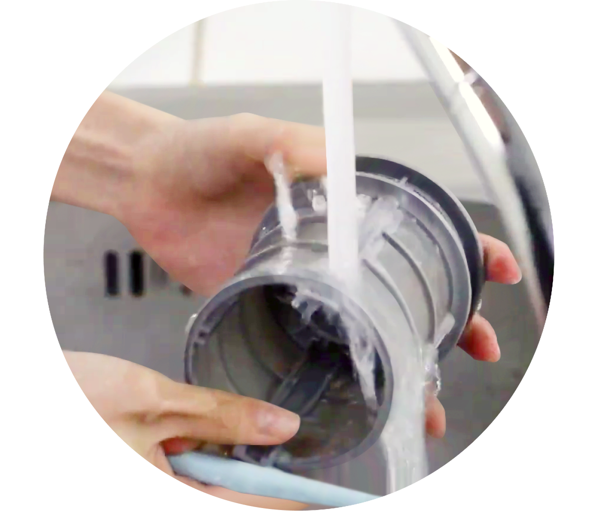

주방식기세척기


보다 더 스마트한 일상
LG ThinQ의 시작

보다 더 스마트한 일상, LG ThinQ
씽큐는 사람과 가전을 AI 기술로 연결하여 더 편리하고 놀라운 일상을 만드는 LG전자의 스마트 홈 플랫폼입니다.
* 본 콘텐츠는 ThinQ 앱의 콘텐츠입니다.
식기세척기가 있으면 삶의 질이 바뀐다고 하죠?
하지만 편하다고 내부를 청소하지 않고 사용하면 제대로 된 성능을 내지 못할 수 있어요. 식기세척기 청소 방법을 알아볼까요?
01
하단 식기 바구니 꺼내기
식기세척기 문을 열고 하단 식기 바구니를 꺼내 주세요.
02
필터 꺼내기
식기세척기 내부 바닥에 있는 필터를 반시계 방향으로 돌려 꺼낼 수 있어요.
배수관으로부터 역류하는 냄새를 차단하기 위해 제품 하단에 일정량의 물이 차 있어요. 다음 세척 코스를 진행하면 남아있던 물이 배수되고 새로 급수가 진행돼요.
03
필터 분리하기
① 일반 필터와 ② 스테인리스 필터를 가볍게 들어올려 조심히 분리해 주세요.
04
오염물 제거하기
부드러운 솔로 필터에 묻어있는 음식물 찌꺼기를 제거해 주세요.
05
필터 세척하기
필터의 오염된 부위는 흐르는 물에 씻겨 주세요.
필터 세척 시 무리한 힘을 가하면 필터가 손상될 수 있으니 주의해 주세요.

06
필터 조립하기
일반 필터와 스테인리스 필터를 다시 원래 자리에 넣은 후 시계방향으로 ‘딸깍’ 소리가 날 때까지 돌리고, 위 그림과 같이 화살표가 나란히 일직선이 되도록 조립해 주세요.
조립이 제대로 되었는지 확인 후 사용해야 해요. 조립이 제대로 되지 않으면 필터가 찌꺼기를 채집하지 못해 세척 성능이 떨어져요.
07
하단 식기 바구니 조립하기
하단 식기 바구니를 원래 있던 자리에 넣어주세요.
01
하단 식기 바구니 꺼내기
식기세척기 문을 열고 하단 식기 바구니를 꺼내 주세요.
02
토네이도 세척 날개 청소하기
세척 날의 구멍을 막고 있는 음식물 찌꺼기가 있다면 핀과 같은 뾰족한 도구를 사용해서 제거하세요.
고정된 날개를 강제로 당기거나 회전시키면 파손의 원인이 될 수 있으니 주의해 주세요.
03
상단 식기 바구니 꺼내기
상단 식기 바구니를 앞쪽으로 살짝 당겨 꺼내 주세요.
04
중간 세척 날개 분리하기
상단 식기 바구니 아래 세척 날개 아랫부분의 너트를 화살표 방향으로 돌려 딸깍 소리가 나면 아래로 당겨 분리해 주세요.
05
중간 세척 날개 세척하기
분리한 중간 세척 날개에 물을 넣고 흔들어 음식물 찌꺼기를 제거해 주세요.
날개 구멍이 막혀있다면 핀과 같은 뾰족한 도구로 음식물 찌꺼기를 제거해 주세요.
06
중간 세척 날개 헹구기
다시 중간 세척 날개에 물을 넣고 흔들어 음식물 찌꺼기를 빼주세요.
07
중간 세척 날개 조립하기
중간 세척 날개를 원래 자리에 두고 너트를 화살표 방향으로 돌려 딸깍 소리가 나도록 조립해 주세요.
조립 후 중간 세척 날개가 부드럽게 회전하는지 확인해 주세요.
08
상·하단 식기 바구니 제자리에 넣기
상단 식기 바구니와 하단 식기 바구니를 제자리에 넣고 바구니가 잘 끼워졌는지 확인해 주세요.
편리한 식기세척기가 언제나 최상의 성능을 유지하도록 잊지 말고 청소해 주세요.


LG ThinQ
ThinQ 하나로 더 좋아지는 일상
일상을 더 편하고 스마트하게 만들어주는 씽큐 앱을 지금 바로 만나보세요.
- #필터청소
- #필터청소방법
- #청소
- #세척
- #식기세척기
- #식기세척기사용법
- #식기세척기청소
- #배수관
- #식기바구니
출처 및 고지사항
- [LG전자] LG 디오스 오브제컬렉션 식기세척기 - 제품 사용설명서 : 음식물 거름 필터 청소하기 >
- [LG전자서비스] LG전자 식기세척기_필터청소법 >
- [LG전자서비스] LG DIOS 식기세척기 - 세척 날개 청소법, 바구니 분리법 >
- LG 키친어플라이언스 연구소 (식기세척기 QE팀)